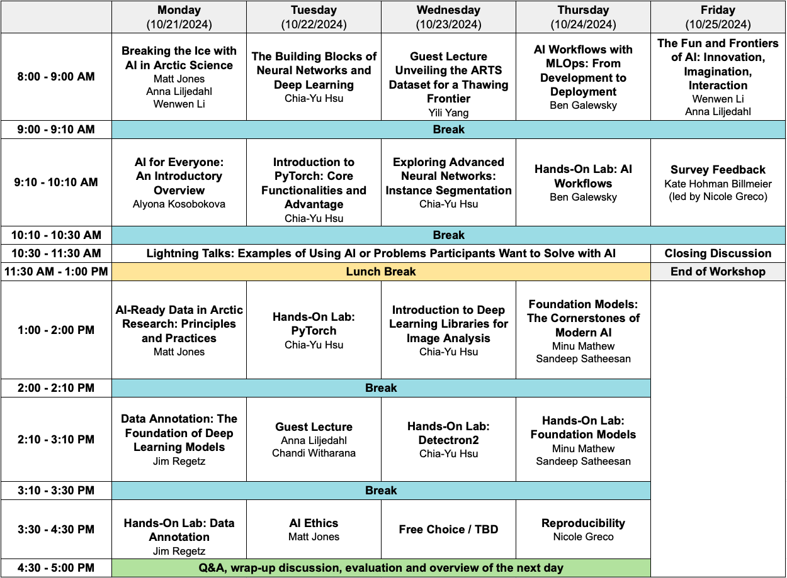

Wenwen Li
Project Lead
Principal Investigator, NSF Award 2230034
Professor
Arizona State University
wenwen@asu.edu
Welcome to our groundbreaking workshop aimed at empowering Arctic scientists with the essential tools and knowledge of Artificial Intelligence (AI). In an era where data-driven science is revolutionizing research methodologies, the Arctic region’s intricate and dynamic nature poses unique challenges and opportunities. This 5-day in-person workshop, hosted by ASU, UCSB, Woodwell, UIIC, and NCSA as part of the NSF Cyber2A training program, is specifically tailored for scientists engaged in Arctic research who may have limited backgrounds in computer science and computing but are eager to integrate AI into their research.
Our comprehensive curriculum, developed through extensive research and training, emphasizes fundamental AI concepts, hands-on experiences, and addresses the particular challenges encountered in Arctic research. Participants will gain an overview of AI basics, including key concepts, methodologies, and the language of AI that every scientist should know. Additionally, the workshop will delve into practical AI applications, such as using AI models and tools to analyze data, predict outcomes, and gain insights into complex Arctic phenomena. Join us in this transformative journey to understand and interact with the Arctic environment through the powerful lens of AI.
Workshop Dates: October 21st, 2024 - October 25th, 2024
Venue: In-Person at the National Center for Ecological Analysis and Synthesis (NCEAS) in Santa Barbara, California
Registration Process: Participants will be selected based on responses to questions in the workshop application (linked at the bottom of this page). Registration details will be provided to selected participants after the application period concludes.
Fees: Tuition is covered for the accepted participants by the Cyber2A award from NSF

Prerequisites:
Preparation Materials: Please refer to the reference section of each workshop curriculum preview for review and further reading.
Contact Person: WenWen Li, Arizona State University
Email: Please reach out to wenwen@asu.edu with any questions or concerns
Phone: For urgent concerns, please contact 480-727-5987
Accommodations: Lodging will be covered by the Cyber2A award from NSF and will be located in Santa Barbara, CA. Additional information about lodging and transportation will be provided to accepted participants.
Policies: Please review the NCEAS Code of Conduct prior to applying for this workshop
**Applications for this workshop closed on August 1st, 2024
Direct any issues or questions regarding the application to: greco@nceas.ucsb.edu
Upcoming webinars will be posted here as they are organized